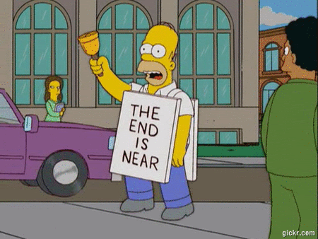
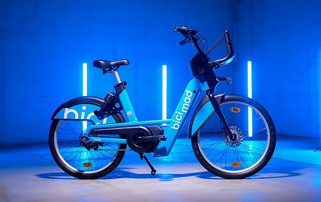

BiciMAD, el sistema de bicicletas públicas de Madrid, inaugurado en 2014, promueve la movilidad sostenible y reduce la congestión vehicular.
BiciMAD ha crecido significativamente desde su inicio, contando actualmente con 7,500 bicicletas eléctricas y 611 estaciones en toda la ciudad, facilitando casi 6 millones de viajes.
BiciMAD ha reducido la contaminación y la congestión del tráfico en Madrid, proporcionando una alternativa ecológica y conveniente al transporte motorizado.
Nuestro objetivo es optimizar BiciMAD utilizando Machine Learning para reducir la huella ecológica, promover un estilo de vida saludable y mejorar la experiencia del usuario.
